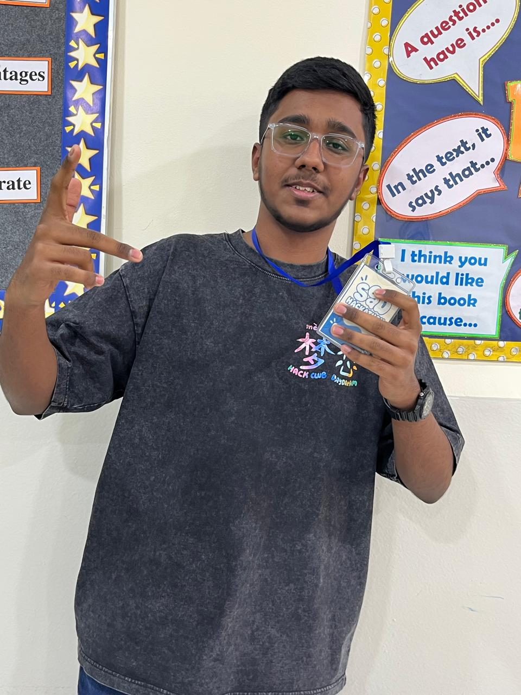
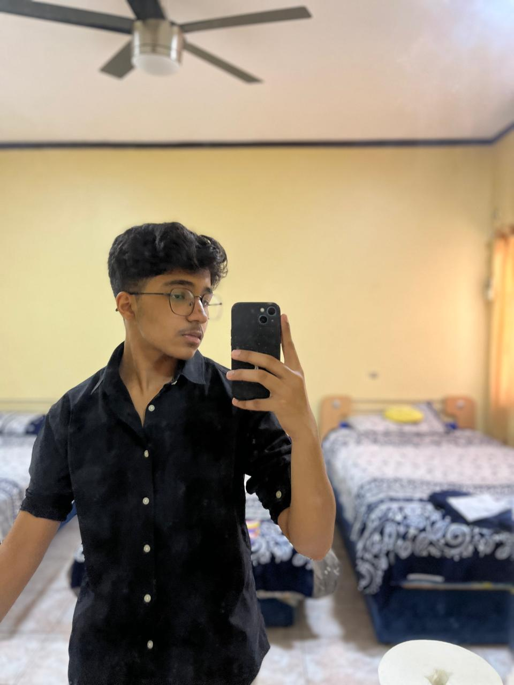
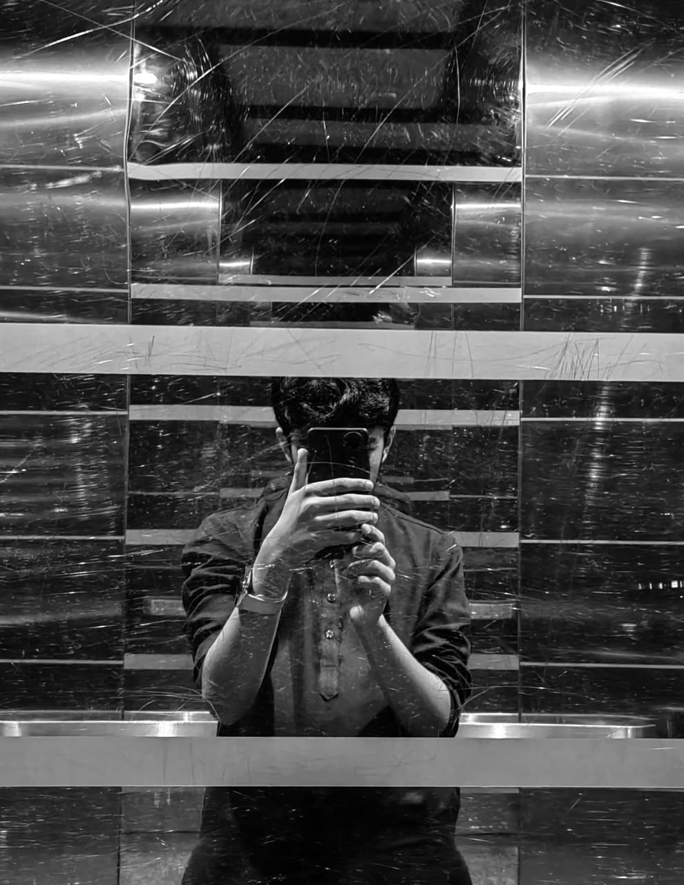

Focus sessions
YOUR FREE PERSONAL STUDY SPACE
Make today count.
Small steps, focused sessions, big progress. Let's get things done.
Your study day
Ready to focus?Tasks completed
0
Past Papers Completed
0
What Makes US Different?
WE keep it simple and minimalistic. Who even uses all that Talam AI Past Paper Checker. You got an Internet connection and a brain, and all of it becomes easy. What isn't so easy, is getting started. Everyone can easily access revision resources, past papers and topical questions, but BARELY ANYONE finds the motivation to open tem. A-Star prioritizes that first step. Effective time tracking, interactive To-Do lists, and Past-Paper tracking all assist in getting started.
You don't have to be great to start, but you have to start to be great. — Zig Ziglar
Who are WE?
Khizer Ahmed

Tayyab Naveed

Rehan Naveed

Contact US
Email: StudentSupport@A-Star.com
Phone: +123 321 123
Adress: NWIS Grade 10-B P.O.: 34235